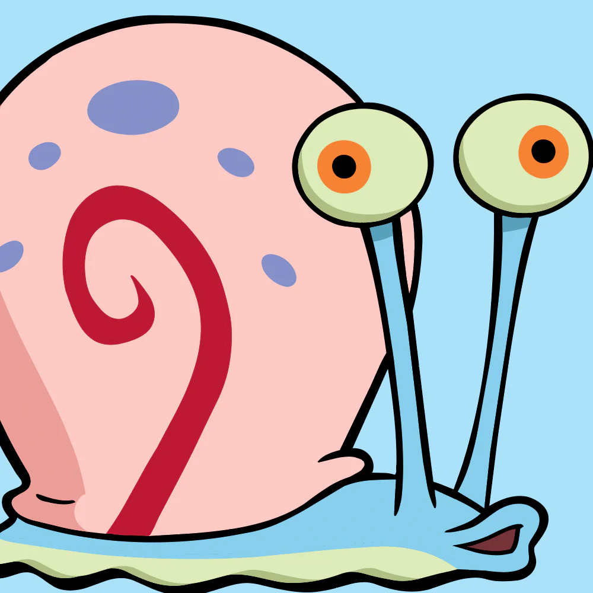

Губка Боб Квадратные штаны-заглавный персонаж и главный герой. Он-морская губка, которая работает поваром в ресторане быстрого питания "Красти Краб". Он отличается оптимизмом и детской непосредственностью
Главные герои
Патрик - невежественный, но с чувством юмора лучший друг Губки Боба. У него нет никаких занятий, в основном он проводит свое время либо паясничая со Спанч Бобом, ловя с ним медуз, либо бездельничая под скалой, под которой он живет.

Сквидвард — человекоподобный осьминог , который живёт в каменном доме, между домами Губки Боба и Патрика. Он вспыльчивый и претенциозный. Он с неприязнью относится к соседям и их постоянному шуму. Сквидвард работает в ресторане «Красти Краб», но ненавидит эту работу.
Планктон — главный злодей мультсериала «Губка Боб Квадратные Штаны». Владеющим непопулярным рестораном. Хочет выкрасть знаменитую секретную формулу «Крабсбургера».
Мистер Крабс. Он - красный краб, который живёт в доме-якоре со своей приёмной дочерью Перл, которая является кашалотом. Он является владельцем и основателем ресторана "Красти Краб", а также работодателем Губки Боба и Сквидварда. Мистер Крабс чрезвычайно жаден и одержим деньгами.

Гэри- это морская улитка, которая является домашним животным Губки Боба Квадратные Штаны.
Сериал посвящен оптимистичной морской губке по имени Губка Боб Квадратные Штаны, который живет в подводном ананасе со своей любимой улиткой Гэри. Он живет среди двух ближайших соседей по имени Патрик Стар, лучший друг Губки Боба, и Щупальца Сквидварда, сварливого осьминога. Губка Боб и Сквидвард работают вместе в ресторане быстрого питания под названием Красти Краб. Их босс - скряга-краб по имени Юджин Х. Крабс, который живет со своей дочерью-китом, Перл. Губка Боб записался в школу вождения лодок, которой управляет миссис Пафф, рыба-фугу, и часто проводит время с любительницей острых ощущений белкой с поверхности по имени Сэнди Щек. Злодеи шоу планктон и компьютера его жена, Карен, владеющих не ресторан под названием "помойном ведре" через дорогу от "Красти Краб". Сериал был впервые показан 1 мая 1999 года в качестве "краткого обзора" после вручения премии "Выбор детей" 1999 года. Официально он начал выходить в эфир 17 июля того же года. Изначально шоу получило зеленый свет только на 6 получасовых серий (всего двенадцать сегментов); создатель Стивен Хилленбург сказал: "Я думал, что если оно продлится полный сезон, то у нас будет двенадцать шансов написать истории, и, возможно, на этом все ... двенадцать показов и их отменят".[3] К его удивлению, шоу имело успех в рейтингах, и с тех пор оно длилось 14 сезонов. В настоящее время идет четырнадцатый сезон сериала, который был продлен на пятнадцатый. На протяжении всего сериала в некоторых эпизодах ломается четвертая стена, показываются сцены живого действия, а иногда в эпизоде упоминается названиеэпизода. В некоторых эпизодах есть временные карточки, которые часто зачитывает французский Рассказчик. Иногда во время производства эпизода название эпизода переименовывается перед премьерой. Иногда производство эпизода отменяется, и некоторые сцены эпизода могут быть удалены либо до, либо после производства эпизода. Некоторые МЕДИА о Губке Бобе утеряны для общественности. Различные локации и объекты упоминаются, но их не видно. Сериал был впервые показан 1 мая 1999 года в качестве "краткого обзора" после вручения премии "Выбор детей" 1999 года. Официально он начал выходить в эфир 17 июля того же года. Изначально шоу получило зеленый свет только на 6 получасовых серий (всего двенадцать сегментов); создатель Стивен Хилленбург сказал: "Я думал, что если оно продлится полный сезон, то у нас будет двенадцать шансов написать истории, и, возможно, на этом все ... двенадцать показов и их отменят".[3] К его удивлению, шоу имело успех в рейтингах, и с тех пор оно длилось 14 сезонов. В настоящее время идет четырнадцатый сезон сериала, который был продлен на пятнадцатый. На протяжении всего сериала в некоторых эпизодах ломается четвертая стена, показываются сцены живого действия, а иногда в эпизоде упоминается названиеэпизода. В некоторых эпизодах есть временные карточки, которые часто зачитывает французский Рассказчик. Иногда во время производства эпизода название эпизода переименовывается перед премьерой. Иногда производство эпизода отменяется, и некоторые сцены эпизода могут быть удалены либо до, либо после производства эпизода. Некоторые МЕДИА о Губке Бобе утеряны для общественности. Различные локации и объекты упоминаются, но их не видно